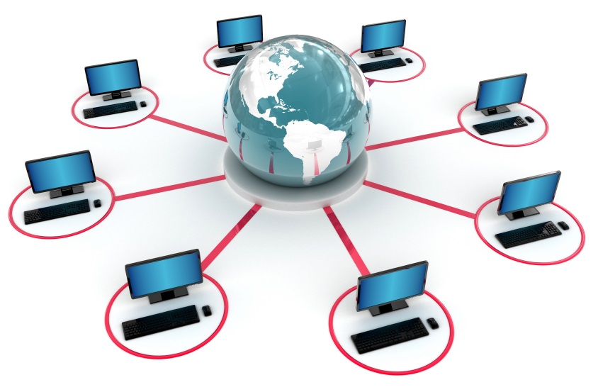

Jaringan

Jaringan komputer (jaringan) adalah jaringan telekomunikasi yang memungkinkan antar
komputer untuk saling berkomunikasi dengan bertukar data. Tujuan dari jaringan komputer
adalah agar dapat mencapai tujuannya, setiap bagian dari jaringan komputer dapat
meminta dan memberikan layanan (service).
Pihak yang meminta/menerima layanan disebut klien (client) dan yang memberikan/mengirim
layanan disebut peladen (server). Desain ini disebut dengan sistem client-server,
dan digunakan pada hampir seluruh aplikasi jaringan komputer.